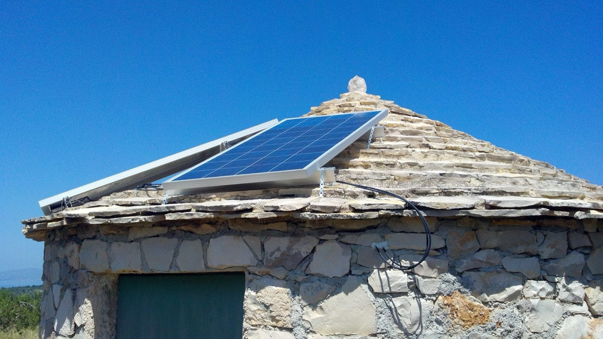

IdejaThe idea
Nekoliko starih brodskih kontejnera obnovi se i od svakog nastane mali ured za najam električnih skutera. Na svaki hrvatski otok do kojeg se može doći autom, trajektom ili preko mosta, u sezoni dođe po jedan takav kontejner. Ljudi unajme skuter i voze se po otoku bez buke i bez benzina.A few old shipping containers are renovated and each one becomes a small office for renting electric scooters. Every Croatian island you can reach by car, on the ferry or over a bridge, gets one of these containers for the season. People rent a scooter and ride around the island with no noise and no petrol.
Ime je Green and Go Croatian Islands. Na engleskom je jer ga turisti odmah razumiju.The name is Green and Go Croatian Islands. It is in English because every tourist understands it straight away.
Jedan kontejner radi četiri poslaOne container does four jobs
Kontejner je punionica, skladište za skutere i ured u isto vrijeme. Unutra ima klimu, pa osoba koja radi najam može cijeli dan sjediti u hladu, izdavati skutere i pratiti gdje se koji nalazi. Navečer se skuteri pune na utičnicama uz zid kontejnera i ujutro su spremni.The container is a charging station, a store for the scooters and an office at the same time. It has air conditioning inside, so the person running the rental can sit in the cool all day, hand out scooters and see where each one is. In the evening the scooters charge on the sockets along the container wall and in the morning they are ready.
Zamisao je kontejner od 40 stopa s velikim prozorom kroz koji se izdaje skuter, tendom i malom drvenom terasom ispred. Solarni paneli na krovu bili bi lijep dodatak.The idea is a 40 foot container with a big window where the scooters are handed out, an awning and a small wooden deck in front. Solar panels on the roof would be a nice extra.

Kamion, trajekt i utičnicaA truck, a ferry and a plug
Logistika je stvarno jednostavna. Kamion natovari kontejner, ukrca se na trajekt ili prijeđe most i spusti ga negdje gdje ima struje. Priključimo ga, skuteri se napune i najam može početi isti dan.The logistics are really simple. A truck loads the container, drives onto the ferry or over the bridge and sets it down somewhere with electricity. We plug it in, the scooters charge and the rental can start the same day.
Kad sezona završi, kamion ga odveze natrag ili na drugo mjesto. Ne gradimo ništa, kontejner dođe i ode, a otok ostane kakav je bio.When the season ends the truck takes it back or somewhere else. We build nothing, the container comes and goes and the island stays as it was.

Jedan otok, jedan kontejnerOne island, one container
Mjerilo je jasno. Ako se na otok može doći autom, tamo ide jedan kontejner.The rule is clear. If you can get to the island by car, one container goes there.
Preko mostaOver a bridge
Krk, Pag, Čiovo, Murter, Vir i PašmanKrk, Pag, Čiovo, Murter, Vir and Pašman
TrajektomBy car ferry
Cres i Lošinj, Rab, Ugljan, Dugi otok, Iž, Brač, Hvar, Šolta, Vis, Korčula, Lastovo i MljetCres and Lošinj, Rab, Ugljan, Dugi otok, Iž, Brač, Hvar, Šolta, Vis, Korčula, Lastovo and Mljet
To je skoro dvadeset otoka uz cijelu obalu. Popis još treba provjeriti s trenutnim linijama Jadrolinije za aute.That is almost twenty islands along the whole coast. The list still has to be checked against the current Jadrolinija car ferry lines.

Otok na dva kotačaThe island on two wheels
Glavna flota su električni skuteri na kojima se sjedi, jer se po otoku vozi otvorenom cestom od mjesta do mjesta. Romobili bi mogli doći kao dodatak za kratke vožnje po samom mjestu.The main fleet is seated electric scooters, because on an island you ride the open road from village to village. Kick scooters could come as an extra for short rides around town.
Svaki skuter ima GPS, pa u kontejneru znamo gdje je, koliko mu je baterije ostalo i je li netko zapeo na cesti. To je sigurnost za ljude i za flotu, a radi se po GDPR pravilima.Every scooter has GPS, so in the container we know where it is, how much battery it has left and whether someone is stuck on the road. That is safety for the people and for the fleet, and it is done under the GDPR rules.
Za turista to znači da siđe s trajekta bez auta, uzme skuter i vidi otok onako kako ga mi poznajemo. Uvale i maslinike i ono malo selo gore u brdu do kojeg autobus ne ide.For a tourist it means getting off the ferry without a car, taking a scooter and seeing the island the way we know it. The coves and the olive groves and that little village up on the hill where the bus does not go.

Zeleno i komercijalno u isto vrijemeGreen and commercial at the same time
Projekt se plaća s tri strane i zato može trajati godinama, a ne samo jedno ljeto.The project is paid for from three sides, and that is why it can last for years and not just one summer.
NajamRental
U sezoni su otoci puni ljudi koji bi rado ostavili auto i maknuli se od gužve. Najam skutera je prihod od prvog dana.In the season the islands are full of people who would gladly leave the car and get away from the crowds. Scooter rental is income from the first day.
SponzoriSponsors
Proizvođač skutera dobije svoje ime na kontejnerima i skuterima na skoro dvadeset otoka, pred stotinama tisuća turista svako ljeto. Zauzvrat mi dobijemo flotu besplatno ili puno jeftinije. Prvi na popisu su europski proizvođači Silence, Askoll, Vespa Elettrica, Govecs i Kumpan. Od domaćih su prirodni partneri Greyp, HEP s mrežom punionica ELEN, Jadrolinija čijim bi trajektima kontejneri putovali i Hrvatski Telekom za GPS vezu.A scooter maker gets its name on the containers and the scooters on almost twenty islands, in front of hundreds of thousands of tourists every summer. In return we get the fleet free or much cheaper. First on the list are the European makers Silence, Askoll, Vespa Elettrica, Govecs and Kumpan. The natural Croatian partners are Greyp, HEP with its ELEN charging network, Jadrolinija whose ferries the containers would travel on, and Hrvatski Telekom for the GPS connection.
Javni novac za manje CO2Public money for less CO2
Fond za zaštitu okoliša i energetsku učinkovitost najavio je za ovu jesen poziv od oko 20 milijuna eura za energetski učinkovita vozila i male punionice. EU program LIFE svake godine ima poziv za klimu, pa bi 2027. bila realna godina za prijavu. Tu je i europska inicijativa Clean Energy for EU Islands, a Pokret otoka im je partner u Hrvatskoj i mogao bi nam otvoriti vrata. Treba još provjeriti tko se sve smije javiti na koji poziv.The Croatian Environmental Protection and Energy Efficiency Fund has announced a call this autumn of about 20 million euro for energy efficient vehicles and small chargers. The EU LIFE programme has a climate call every year, so 2027 would be a realistic year to apply. There is also the European initiative Clean Energy for EU Islands, and Pokret otoka is its partner in Croatia and could open doors for us. Who may apply to which call still has to be checked.

Prvi korakThe first step
Početak je jedan kontejner na jednom otoku, da se vidi kako to radi u stvarnosti prije nego se krene dalje. Prirodan prvi otok je Ugljan, Kukljica, gdje poznajemo teren i ljude koji bi pomogli.The start is one container on one island, to see how it works in real life before going further. The natural first island is Ugljan, Kukljica, where we know the ground and the people who would help.
Prvo bi trebalo naći rabljeni kontejner i mjesto sa strujom, razgovarati s općinom i pitati jednog proizvođača bi li nam dao skutere za probnu sezonu. Ako to ljeto prođe dobro, sljedeće godine kontejneri idu na više otoka.First we need a used container and a spot with electricity, a talk with the municipality, and one maker willing to lend scooters for a trial season. If that summer goes well, the next year the containers go to more islands.
Sunce na kamenom krovuThe sun on a stone roof
Green and Go je izdanak Kukljica EcoOasisa, obnove sedam hektara starih maslinika na Ugljanu. Tamo namjeravamo graditi bunje, okrugle suhozidne kućice ove obale. Na Braču sam 2014. vidio bunju sa solarnom pločom na krovu od kamenih ploča: najstarija gradnja otoka nosi novu struju. Ista ideja može puniti skutere, kontejner u luci i bunja s pločom u masliniku.Green and Go grew out of Kukljica EcoOasis, the restoration of seven hectares of old olive land on Ugljan, where we mean to build bunje, the round dry stone huts of this coast. On Brač in 2014 I saw a bunja with a solar panel on its slab roof: the oldest building of the islands carrying new power. The same idea can charge scooters, a container in the harbour and a bunja with a panel in the olive grove.

Kukljica EcoOasis, matični projekt →Kukljica EcoOasis, the parent project →

Na kraju dana skuteri se pune, a kontejner čeka sljedeće jutro.At the end of the day the scooters charge and the container waits for the next morning.